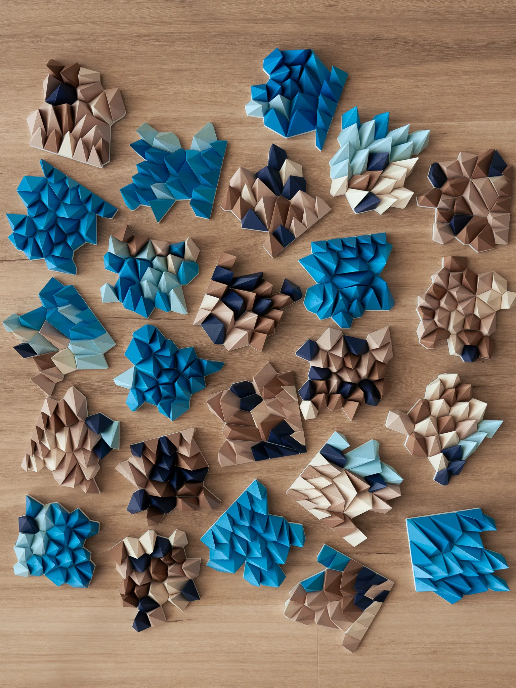
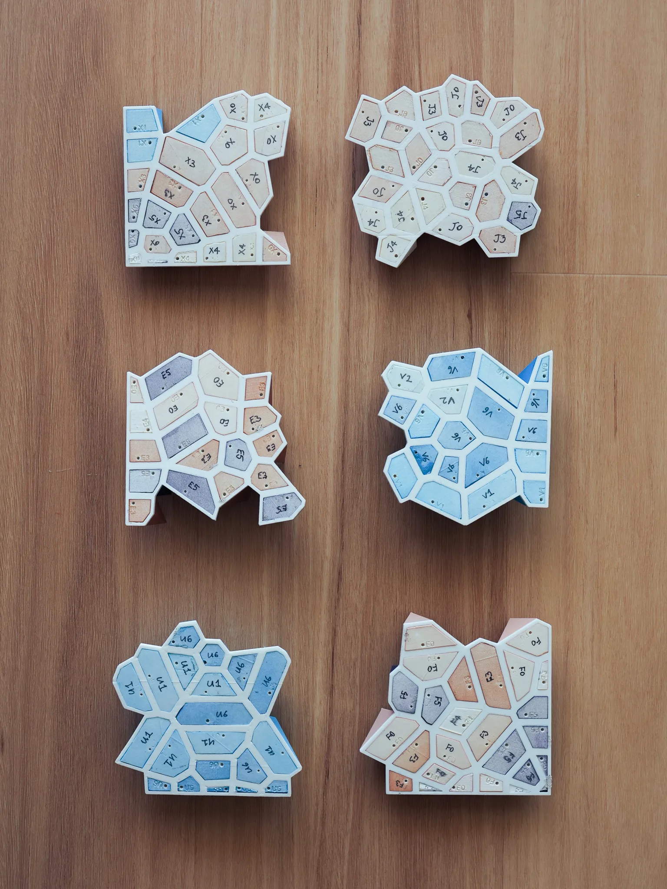

Fragments Sculptural Artwork
Commissioned by City of Gosnells
This 3D-printed artwork comprises hundreds of uniquely shaped and coloured shards, assembled to form a continuous yet fragmented surface. Their geometry and arrangement draw on natural patterns translated into computational systems. Flocking behaviours, attractor fields, forest growth patterns and Voronoi diagrams were used to generate a complex, textured surface that evokes the distinctive landscapes of Western Australia. The composition reflects on the ways human systems reshape nature into managed fragments—artefacts that simultaneously express complexity, discreteness and continuity.
- Design: Andrei Smolik
- Year completed: 2025
- Type: Sculptural Wall Art
- Client: City of Gosnells
- Medium: Painted PLA plastic on wood veneer
- Budget: $4,600
- Size: 540mm x 360mm x 30mm



